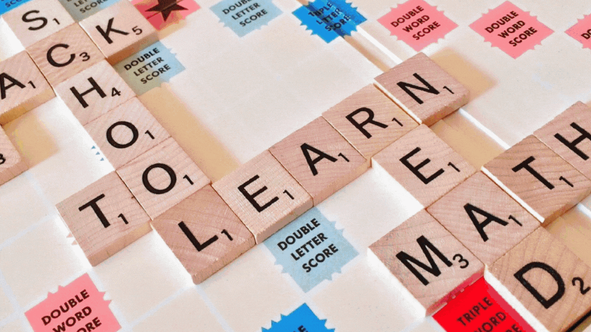
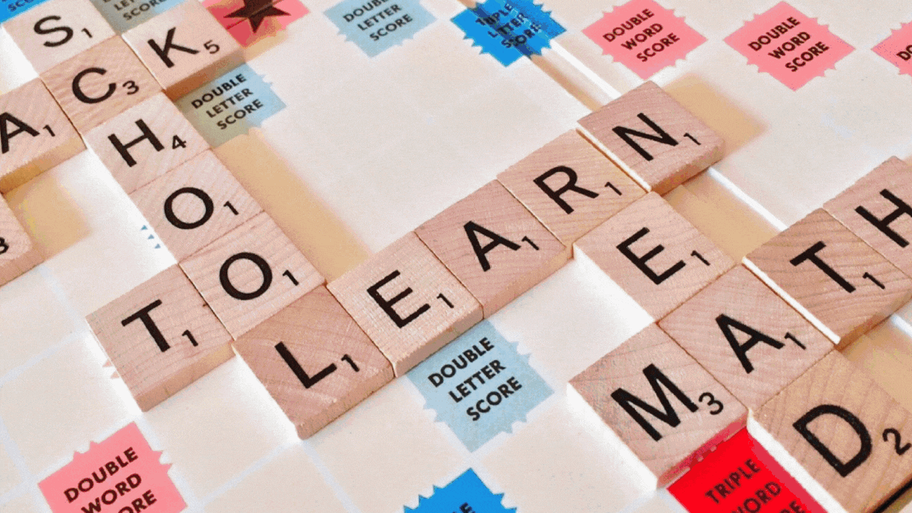
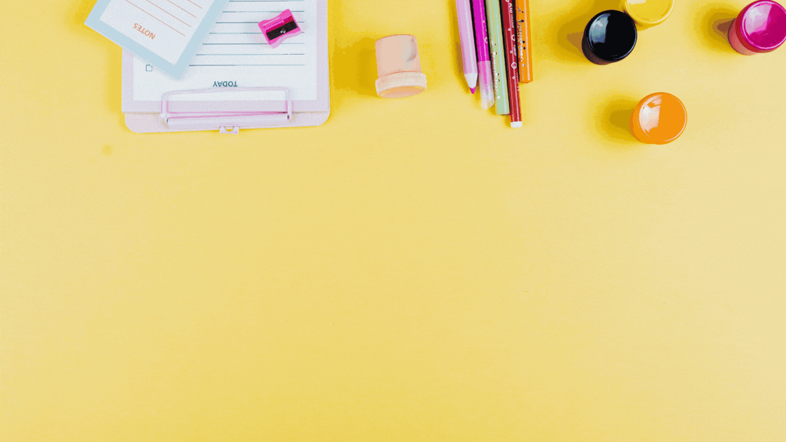
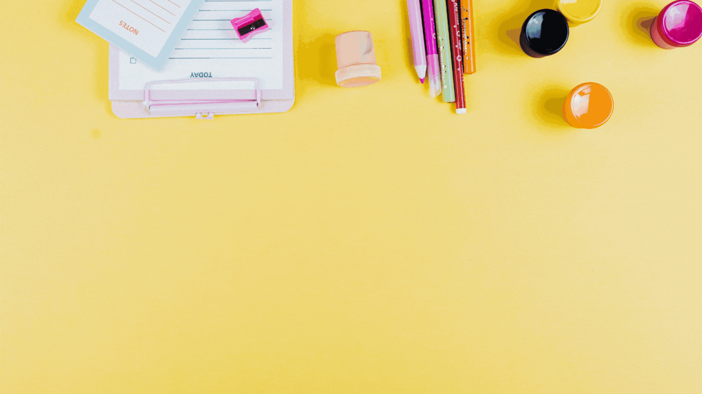
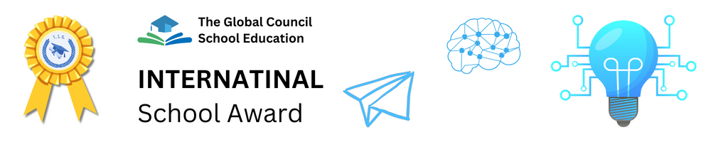

 

The genesis of a The International School is an event in itself and the The International School Kolkata is no exception. TIS Kolkata bears the vision of inculcating in the students the right moral values so that they grow up to be able citizens of tomorrow. TIS Kolkata, a CBSE affiliated school, will aim to preserve and enhance the highest standards of excellence and prepare generations for the 21st century. It has been providing a nurturing and innovative environment to students to become amiable, confident and productive members of the community. At TIS Kolkata, there is a healthy emphasis on both curricular and co-curricular programmes. To groom students into responsible and gracious citizens of the world, strong emphasis is placed on the development of strength of character, mindset of excellence, commitment to teamwork and leadership potential. 
Our vision SACH encompasses these important areas for holistic development in students. In this digital age, we aim at providing activity-oriented learning enabling digital natives, i.e. our students use both dexterity of hand and agility of mind empowering global citizens. Equal importance is given to inculcating the most important virtue in today’s time, that is humility. As education along with humility is a mark of well-balanced and cultured individual. I hope our vision of SACH will enable our students to withstand and deal deftly with the rigors of life experiences encountered daily.